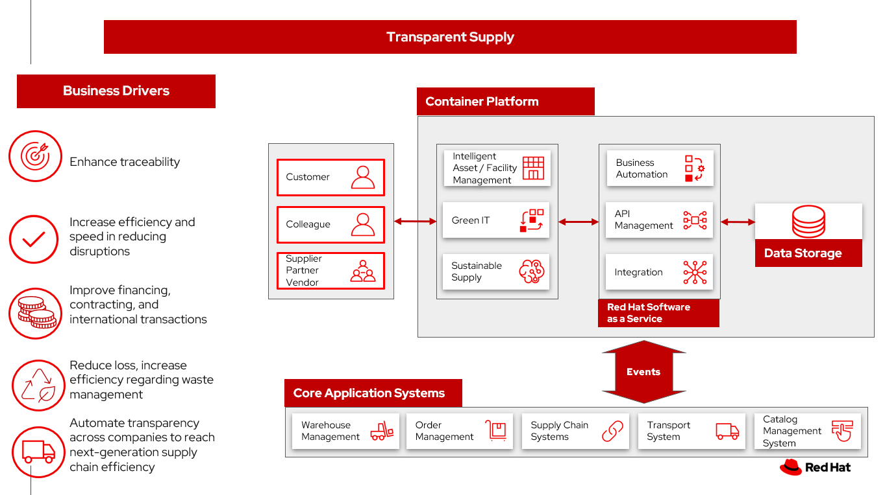

Transparent supply
A sustainable supply platform enables goods-specific transparency across multiple supply chain partners, enabling analytics by company, location, product movement and condition.
Use cases
- Track the physical flow of goods across companies for new speed to insight
- Combine data that is typically siloed to leverage new business drivers
- Automate transparency across companies to reach next-generation supply chain efficiency
- Track the legacy of products, such as pharmacy and perishable items
Business problem
You can unleash the full power of data and end-to-end visibility to empower all supply chain participants and create new business value.
- Drive buyer engagement to grow your market. Engage and empower buyers in new ways and build trust in your brand by showing how a product was made and demonstrating support for ethical and sustainable production.
- Transform your business model to optimize revenue. Leverage supply chain visibility to improve predictions and forecasting with real-time data and optimize inventory dynamically. Use smart contracts to automate responsiveness up and down the chain.
- Reduce supply chain complexity, errors and cost. Combine blockchain, IoT and AI to automate digitization of supply chain data, handle dispute resolution proactively and share digital documents across companies.
Challenges / Business Drivers
Challenges
- Companies may be wary of sharing competitive data are more willing to participate on the platform.
- Visibility into your supply chain is limited as goods move from the supplier’s supplier to the customer’s customer.
- Transactions are often still paper based.
Drivers
- Enhance traceability. If a company discovers a faulty product, the blockchain enables the firm and its supply chain partners to trace the product, identify all suppliers involved with it, identify production and shipment batches associated with it, and efficiently recall it.
- Increase efficiency and speed and reducing disruptions.
- Improve financing, contracting, and international transactions.
- Reduce loss, increasing efficiency regarding waste management.
Business outcomes
- Quality assurance. Authenticate product origins and validate their provenance to demonstrate brand differentiators to consumers.
- Improved forecasting. Improve product traceability throughout the supply chain in near real-time. Optimize with automatic replenishment.
- Reduced friction. The use of blockchain reduces the costs of dispute resolutions, product recalls, compliance and documentation sharing.
- Extensive automation. Shorten the timeframe to achieve automation through embedded intelligence and smart workflows.
- Reducing loss, increasing efficiency regarding waste management.
Solution overview
The solution shown in Figure 1 uses components that can be grouped into three main categories as shown in the following diagram:
- Core application systems. Often customer-provided technologies, such as order management, facilities management. These systems can be stand-alone applications, on premises and cloud services, databases.
- Foundational infrastructure. The Red Hat/IBM solution is built on Red Hat OpenShift. Data is routed through API management. Events are routed through Business Automation tools such as Business Automation Workshop.
- Sustainable enterprise systems acts to coordinate facilities management with workplace management backed by sustainability reporting.

Figure 1. Overall view of sustainable facilities solution.
The sustainable enterprise works within the existing enterprise infrastructure.

Figure 2. Sustainable enterprise works within existing digital infrastructure.
Logical diagrams

Figure 3. The personas and technologies that provide a platform for some of the biggest potential breakthroughs in the supply chain.
Architecture
The figures in this section show the interaction of suppliers' data to your customer systems.
Sustainable supply
In this figure, suppliers' provides data for decision making to make your supply chain more sustainable

Figure 4. Schematic diagram of the sustainable supply use case.
Sustainable supply workflow steps:
- Suppliers' software provides product sourcing updates through API
- API Management provides and monitors the input of the 3rd partly logistics information
- Your organization receives the suppliers' information and incorporates it into Sustainable Supply
- The Supply Assurance Control Tower surfaces the end-to-end logistics supply chain to users, such as the inventory controller and logistics
- Sourcing data is routed to Sustainability Control Tower for reporting
- Sourcing data is routed to Supply Chain Control Tower for visitibility to Inventory Controller and others and creates work queues as needed
- Based on the visibility into the supply chain, the inventory controller and logistics officer can take actions to replenish supplies or to act to reduce loss
- The Business Automation provides a consistent way for multiple systems to respond, such as
- Update:
- Inventory management system counts of current inventory, store inventory, and future inventory
- Place orders in Order Management System
Action Guide
From a high-level perspective, the Action Guide represents a future state for organizations considering a comprehensive commitment. The idea is to outline a set steps that can be prioritized to reach that future state by adding new functionality to your existing systems.
- Automation
- Sustainability
- Modernization
| Actionable Step | Implementation details | |
|---|---|---|
| Automation | Automate the collection of sustainability data | Reduce manual processing of data |
| Automation | Amp up AI to make workflows smarter | Participants add their data and supporting documents like certifications to the ledger and control who is allowed to see what. Once added to the ledger, data cannot be manipulated, changed or deleted. Participants can track materials and products from source to end customer and, ultimately, the consumer. |
| Sustainability | Include sustainability data in decision making | Integrate sustainability metrics in supply chain, facility management, and data center operations |
| Sustainability | Track sustainability data within your supply chain | Engage vendors and partners to provide sustainability data as part of your purchasing requirements |
| Modernization | Modernization for modern infrastructures, scale hybrid cloud platforms | The decision for a future, Kubernetes-based enterprise platform is defining the standards for development, deployment and operations tools and processes for years to come and thus represents a foundational decision point. |
| Modernization | Modernize application deployment and operations practices | Include DevOps best practices to deploy, monitor, and maintain applications |
For specific steps on this approach, see The Action Guide details in Own Your Transformation survey of 1500 CSCOs across 24 industries.
Technology
The following technologies offered by Red Hat and IBM can augment the solutions already in place in your organization.
Core systems
Red Hat OpenShift Kubernetes offering, the hybrid platform offering allow deployment across data centers, private and public clouds offering choices and flexible for hosting system and services. You can manage clusters and applications from a single console, with built-in security policies with Red Hat Advanced Cluster Management and Red Hat Advanced Cluster Security.
Red Hat Ansible Automation Platform operate, scale and delegate automate IT services, track changes an update inventory, prevent configuration drift and integrated with ITSM.
Red Hat OpenShift DevOps represents an approach to culture, automation and platform design intended to deliver increased business value and responsiveness through rapid, high-quality service delivery. DevOps means linking legacy apps with newer cloud-native apps and infrastructure. A DevOps developer can link legacy apps with newer cloud-native apps and infrastructure.
Integration services
Red Hat OpenShift API Management is a managed API traffic control and program management service to secure, manage, and monitor APIs at every stage of the development lifecycle.
Red Hat Intgration is a comprehensive set of integration and messaging technologies to connect applications and data across hybrid infrastructures. It is an agile, distributed, containerized, and API-centric solution. It provides service composition and orchestration, application connectivity and data transformation, real-time message streaming, change data capture, and API management.
IBM Business Automation delivers intelligent automations quickly with low-code tooling, such as business processes automation, decisioning software, robotic process automation, process mining, workflow automation, business process mapping, Watson Orchestrate, content services, and document processing.
IBM Data Fabric empowers your teams and works across the ecosystem by connecyting data from disparate data sources in multicloud envrionments. In particular, Watson Knowledge Catalog provides you users with a catalog tool for intelligent, self-service discovery of data, models. Watson Query provides data consumers with a universal query engine that executes distributed and virtualized queries across databases, data warehouses, data lakes, and streaming data without additional manual changes, data movement or replication.
Sustainable enterprise sub-system
Envizi simplifies the capture, consolidation, management, analysis and reporting of your environmental, social and governance (ESG) data.
IBM TRIRIGA harnesses the power of data and AI to infuse sustainability into your real estate and facilities management operations.
IBM Maximo Application Suite (MAS) Infuse sustainability into your asset management by harnessing the power of data and AI.
IBM Turbonomic monitors resource consumption of applications within the data center. It provides FinOps engineering teams the ability to ensure your applications are performing efficiently, allowing cloud and ITOps teams to cut cloud spend and multiply ROI.
Transparent Supply provides supply chain management with a robust traceability solution.
References
- Harvard Business Review Building a Transparent Supply Chain
Contributors
- Iain Boyle, Chief Architect, Red Hat
- Mahesh Dodani, Principal Industry Engineer, IBM Technology
- Thalia Hooker, Senior Principal Specialist Solution Architect, Red Hat
- Lee Carbonell, Senior Solution Architect & Master Inventor, IBM
- Eric Singsaas, Account Technical Lead, IBM Technology
- Mike Lee, Principal Integration Technical Specialist, IBM
- Rajeev Shrivastava, Account Technical Lead, IBM
- Bruce Kyle, Sr Solution Architect, IBM Client Engineering